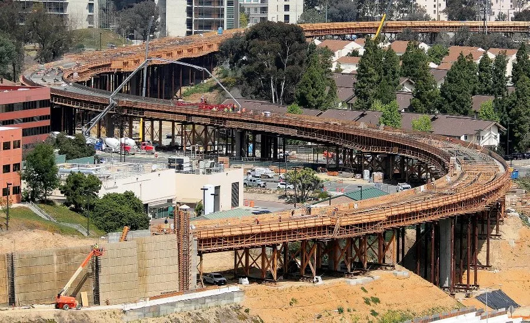
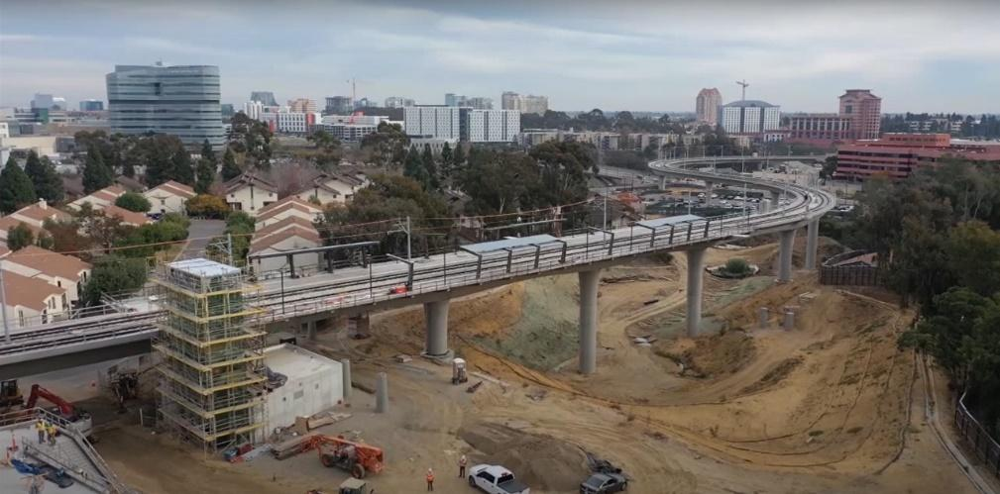
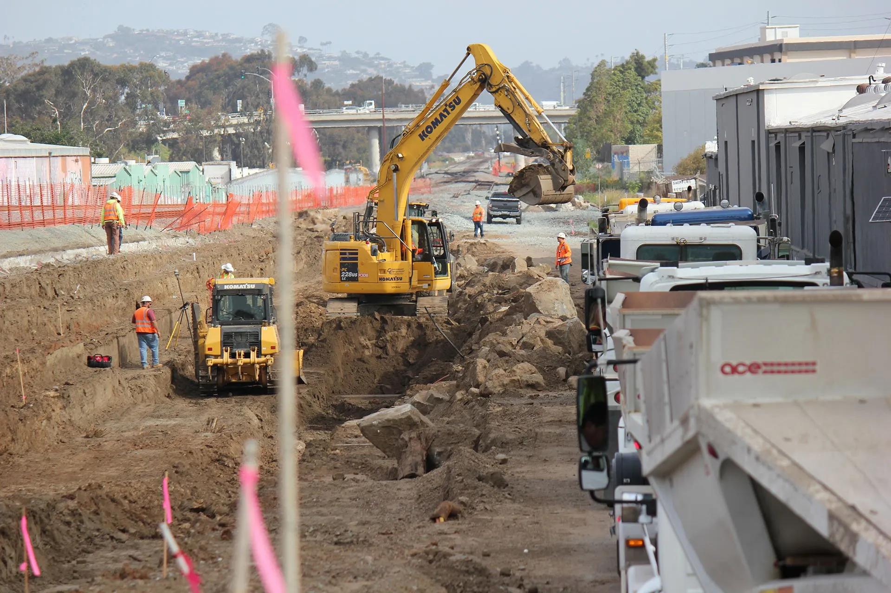
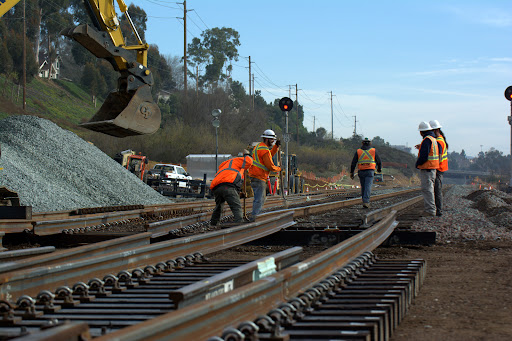

Project Details
- Category: Source Inspection Projects
- Owner: San Diego Association of Governments (SANDAG)
- Location: San Diego County, CA
- Delivery Method: Design-Bid-Build
- Status / Completion: 2020

The Mid-Coast Transit Corridor Project was developed by the San Diego Association of Governments (SANDAG) to expand the region�s light rail system north from Downtown San Diego through some of the county�s most heavily traveled employment, medical, and university districts. The corridor was designed to reduce congestion on Interstate 5, improve access to the University of California San Diego, and provide long-term sustainable transportation capacity for one of the fastest-growing areas in Southern California. The project extended the UC San Diego Blue Line by approximately 11 miles and introduced a combination of at-grade guideway, elevated structures, major bridge crossings, and new transit stations integrated into dense urban infrastructure.
S2 Engineering provided comprehensive source inspection, materials sampling and testing, and batch plant inspection services in direct support of SANDAG�s quality assurance program. Our inspectors were assigned to fabrication facilities producing: � Prestressed concrete girders � Precast structural panels and station components � Reinforcing steel assemblies � Fabricated steel bridge elements S2 verified: � Material certifications and mill test reports � Concrete mix compliance and strength performance � Reinforcement placement and tensioning operations � Dimensional tolerances and fabrication sequencing � Welding quality and inspection documentation In parallel, S2 performed field and laboratory testing of concrete, aggregates, and hot mix asphalt used throughout the corridor. All inspections were performed in accordance with Caltrans, ASTM, and AASHTO standards, with daily reporting to SANDAG�s QA management team.
S2 implemented real-time inspection reporting and verification workflows that allowed immediate identification of fabrication deviations before shipment to site. This eliminated rejected structural elements, reduced installation delays, and maintained continuous construction progress across multiple station and bridge work fronts. By maintaining constant communication between fabrication plants, field crews, and SANDAG QA staff, S2 ensured every structural component entered service fully compliant and traceable.
epub trolley pic A webp

image1 3

MidCoastTrolley1

unnamed